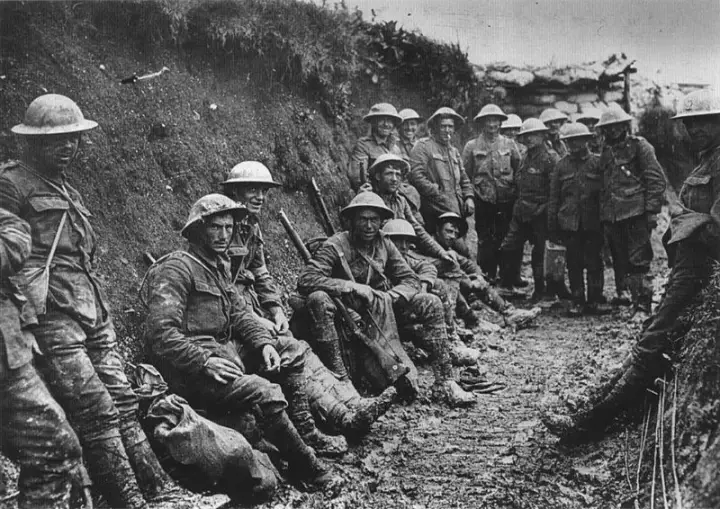
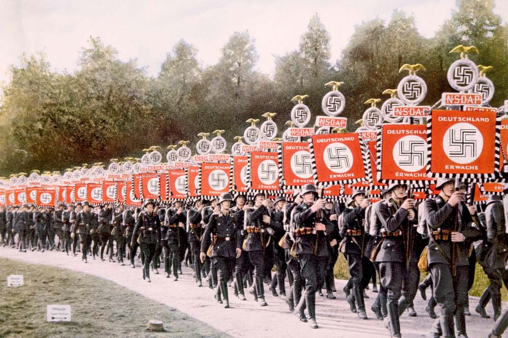
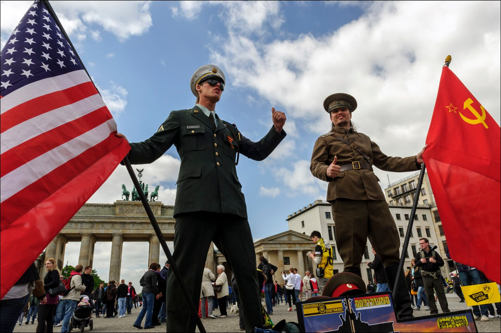
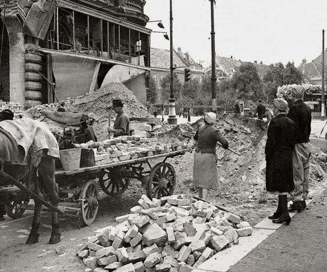
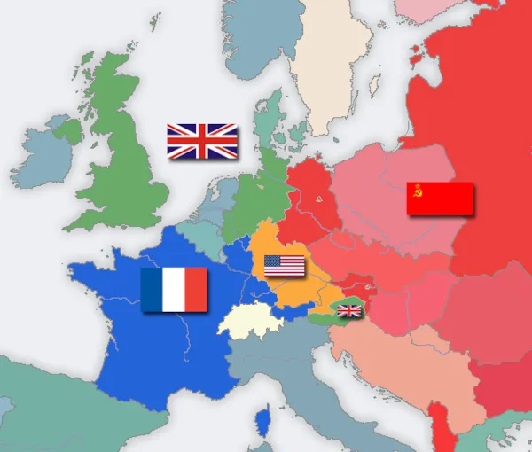
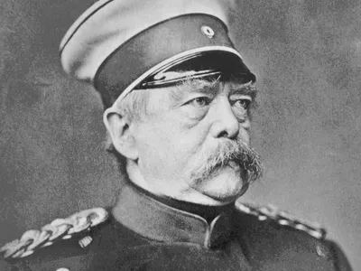
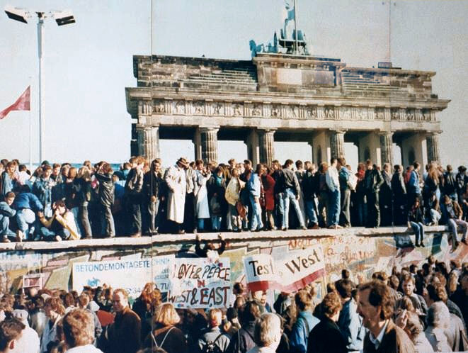

|
 Alemanha
Alemanha
Principais conflitos |
||
|---|---|---|
|
 Primeira Guerra MundialA Alemanha foi uma das Principais potências do conflito (1914-1918) |
 Segunda Guerra MundialA Alemanha sobre o regime nazista, iniciou um conflito de grandes proporções (1939-1945) |
 Guerra Fria / Divisão da AlemanhaApós 1945, o país foi Divido entre Alemanha Ocidental e Alemanha Oriental. |
Impactos Politicos |
|
|---|---|
|
 Mudanças do Governo e na sociedadeAs guerras levaram à queda de regime, grandes reformas políticas e mudanças na organizção do país e na vida da População |
 Consequências internacionaisA Alemanha perdeu territórios, foi ocupada por potências estrangeiras e passou a ter um papel diferentedo cenário Mundial |
Linha do tempo |
|||
|---|---|---|---|
Antes das GuerrasFormação do império Alemão e crescimento como potência europeia. |
Guerras MundiaisParticipação nos dois conflitos e grandes destruições. |
Divisão da AlemanhaPaís dividido em Ocidente e Oriente durante a Guerra Fria. |
ReunificaçãoEm 1990, a Alemanha é reunificada, retomando sua unidade |
Personagens / Marcos |
||
|---|---|---|
|
 Otto Von BismarckLiderou a Unificação da Alemanha no Século XIX. |
Adolf HitlerLíder do Regime nazista durante a Segunda Guerra Mundial. |
 Queda do muro de BerlimSímbolo do fim da Divisão da Alemanha em 1989. |